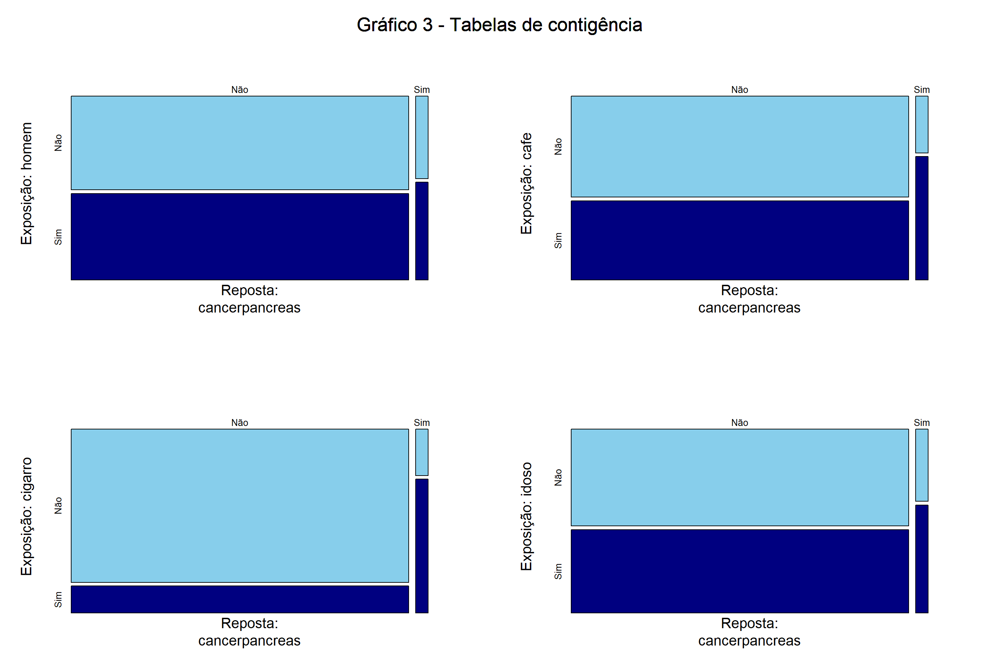

Curso de Análise de Dados para Qualificação da Gestão em Saúde
1ª Avaliação do Módulo 2
Autor
Maria Amélia Santiago Ataide
Aviso
A história descrita neste relatório é parcialmente fictícia, sendo elaborada apenas com o intuito de facilitar a interpretação dos resultados. A análise aqui realizada é totalmente baseada nos insights gerados pelos dados, sem nenhum lastro no conhecimento científico das disciplinas da área da saúde.
Introdução
Maria ao saber que o seu vizinho Seu Antônio, que toma café regularmente estava com câncer de pâncreas ficou preocupada com a possibilidade de também desenvolver a doença, visto que é viciada em café. Então, Maria resolveu estimar modelo logit para verificar a sua própria probabilidade ter câncer de pâncreas. Sabendo que seu vizinho é fumante e que o consumo de cigarro causa diversas doenças, Maria usou como variáveis de interesse cafe e cigarro. A fim de considerear outros fatores que podem influenciar na saúde de um indivíduo, foram incluídas as variáveis de controle sexo e idoso. De acordo com senso comum, os homens tendem a ser menos cuidadosos com a saúde e é razoável pensar que pessoas idosas têm a saúde mais frágil
Dados
Para investigar se o café aumenta a probabilidade de desenvolver câncer de pâncreas, Maria usou dados de um estudo observacional realizado com 2.000 indivíduos. De posse dessas informações, Maria resolveu verificar se as variáveis disponíveis no banco eram adequadas para ajustar o modelo pretendido.
Ao observar a Tabela 1 e o Gráfico 1, Maria constatou que a variável dependente do modelo (cancerpancreas) é uma variável Bernoulli, que assume 1 quando há presença do câncer de pâncreas (sucesso) e 0 na ausência da doença (fracasso), e que a base de dados possui o conjunto de variáveis independentes de que ela precisa para a sua estimação.
Contudo, um ponto de alerta emerge ao se analisar a Tabela 1 e o Gráfico 1: a discrepância entre a quantidade de indivíduos com e sem câncer de pâncreas. No dataset 96,5% (1.930 observações) das informações são de pessoas sem a doença, ao passo que apenas 3,5% (70 observações) estão doentes. De acordo com o blog Outside Two Standard Deviation(2018), um grande problema da regressão logística e de outros classificadores reside na sensibilidade à desbalanceamentos na base de dados.
Análise descritiva
Antes de concluir que o café causa câncer de pâncreas, Maria examinou gráficos de linhas da média com erro-padrão. Assim, ela pôde varificar se existem interações entre as principais variáveis do modelo que ela pretende estimar e se o cigarro é uma variável de confusão.
A análise do Gráfico 1 permitiu concluir que o cigarro atua como uma variável de confusão na relação entre o consumo de café e o desenvolvimento de câncer de pâncreas. Essa conclusão é corroborada por dois fatores. O primeiro é a associação positiva entre fumar e ter câncer de pâncreas, assim como entre fumar e consumir café (Gráficos de 1A a 1C). O segundo fator é o fato de que, os indivíduos fumantes têm maios propensão a ter câncer de pâncreas, independentemente de consumirem ou não café. Ademais, também é possível observar que cigarro e cafe interagem, dado que os indivíduos que fumam e tomam café tiveram mais câncer de pâncreas do que os indivíduos que apenas fumam (Gráfico 1D).
Um método bastante utilizado para mensurar a correlação entre duas variáveis contínuas é a matriz de correlação. Essa ferramenta é frequentemente usada para verificar a correlação linear entre duas variáveis contínuas. Ao se comparar pares de variáveis categóricas, as tabelas de contingência são amplamente empregadas na pesquisa científica em diversas áreas (OUTSIDE TWO STANDARD DEVIATIONS, 2018).
Observando as tabelas de contingência apresentadas no Gráfico 3, constata-se que os indivíduos expostos às quatro variáveis explicativas exibiram uma maior suscetibilidade ao câncer de pâncreas. Dentre estes fatores de risco, cigarro foi o que , proporcionalmente, demonstrou a maior incidência de resultados adversos a sua exposição, seguido pelo café.
Código
## Transforma os dados para exibicao na tabelatab <- dados |> dplyr::select(sexo, idoso:cancerpancreas) |> dplyr::mutate(sexo =ifelse(sexo ==1, "Sim", "Não"),cigarro =ifelse(cigarro ==1, "Sim", "Não"),cafe =ifelse(cafe ==1, "Sim", "Não"),idoso =ifelse(idoso ==1, "Sim", "Não"),cancerpancreas =ifelse( cancerpancreas ==1, "Sim", "Não" ), dplyr::mutate(dplyr::across(dplyr::where(is.character), factor)) ) |> dplyr::rename(homem = sexo) ## Cria vetor para iteracaocolunas <-c("homem", "cafe", "cigarro", "idoso")## Cria vetores para armazenar os resultados dos loopsRR <-list()tab_cont <-list()soma_col <-list()## Cria tabelas de contingencia para as 3 variaveisfor (i in colunas) {tab_cont[[i]] <-table( tab[[5]], tab[[i]],dnn =c("Reposta:\ncancerpancreas", paste("Exposição:", i)) )## Calcula a soma das linhassoma_col[[i]] <-marginSums(tab_cont[[i]], margin =2)## Calcula o risco relativo RR[[i]] <- (tab_cont[[i]][2, 2] / soma_col[[i]][[2]]) / (tab_cont[[i]][2, 1] / soma_col[[i]][[1]]) }par(mfrow =c(2, 2), mar =c(3,3,5,3), cex =1.3)nomes <-names(tab_cont)for (i in nomes) {mosaicplot( tab_cont[[i]], main ="", color =c("skyblue", "navy") )mtext("Gráfico 3 - Tabelas de contigência",side =3,line =-2,outer =TRUE,cex =1.7 )}

Construídas as tabelas de contingência, pode-se facilmente calcular o risco relativo (RR). Esta estatística indica se o grupo exposto e não exposto tem riscos absolutos iguais1. Isso significa que, quando o RR é igual à 1, não há associação entre a exposição e desfecho. No entanto, um RR menor do que 1 sinaliza uma ação protetiva da exposição, enquanto o RR superior a 1 denota que a exposição aumenta o risco de ocorrência do resultado desfavorável.
As quatro variáveis investigadas obtiveram RR acima de 1, sugerindo que todas elas elevam a probabilidade de um indivíduo desenvolver câncer de pâncreas. Novamente, cigarro (13.96) e cafe (2.68) alcançaram os maiores valores, com RR do cigarro ficando 5 vezes acima do RR do cafe. Isso indica que a exposição a estes dois fatores oferece mais riscos ao aparecimento de câncer de pâncreas do que as variáveis homem (1.27) e idoso (1.71).
Modelo logit
Código
## Modelo escolhidomodelo10 <- cancerpancreas ~ cafe + cigarro + sexo + idosoreg10 <-glm(modelo10, family =binomial(link ="logit"), data = dados)
O método utilizado para verificar se fatores como consumo de café, consumo de cigarro, sexo e o fato de o indivíduo ser idoso incrementam a probabilidade de um indivíduo desenvolver câncer de pâncreas foi o modelo logit.
A fim de verificar a robustez e selecionar a especificação com a melhor qualidade de ajuste foram estimados 10 modelos, mostrados na Tabela 2. Os modelos (1) e (2) são regressões simples e utilizaram como variáveis explicativas, respectivamente, cafe e cigarro. Ambas variáveis apresentam significância estatística a um nível de 1%.
A estimação dos modelos de (3) a (8) constata que a significância estatística das variáveis cafe e cigarro se mantem com a adição de mais variáveis explicativas ao modelos (1) e (2).
Já ao se estimar a regressão (9), com cafe e cigarro simultaneamente, o nível de significância da variável cafe passa de 1% para 5%, apontando para uma perda de significância estatística e cigarro matém o nível de 1%. Por fim, estimou-se o modelo (10) com todas as quatro variáveis. Neste modelo, enquanto a variável cigarro permaneceu estatísticamente significante a um nível de 1%, cafe não apresentou significância estatística.
Daí, infere-se que o aumento na probabilidade de se ter câncer de pâncreas aparentemente provocado pelo café, nas equações (1), (3), (5), (7) e (9) pode estar sendo causado por outras variáveis, corroborando a conclusão de que cafe é uma variável de confusão.
Em relação as variárveis idoso e homem, a primeira foi significante a 5% em todos os modelos em que esteve presente, ao passo que a segunda não obteve sigificância em nenhum modelo que foi incluída.
Dessa forma, considerando as variáveis investigadas, conclui-se que os fatores elevam a probabilidade de um indivíduo ter câncer são ser fumante e ser idoso.